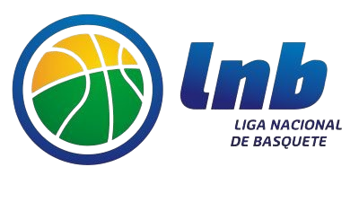
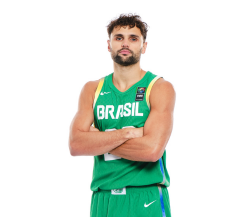
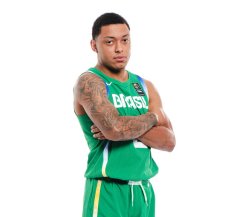
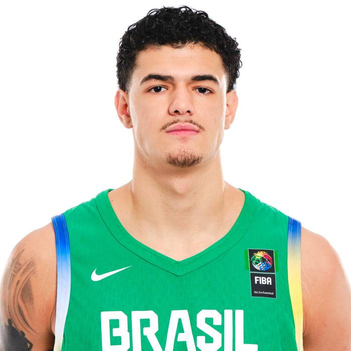
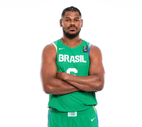

O NBB (Novo Basquete Brasil) é a principal competição de basquete profissional no Brasil, sendo um marco para a consolidação e desenvolvimento do esporte no país. Criada em 2008, a liga é organizada pela Liga Nacional de Basquete (LNB), uma entidade independente composta pelos próprios clubes, com o objetivo de elevar o nível do basquete brasileiro e criar uma plataforma sólida para o crescimento do esporte tanto nacional quanto internacionalmente.

Antes da criação do NBB, o basquete brasileiro passava por um período de instabilidade organizacional, com competições nacionais fragmentadas e pouca visibilidade. A criação da LNB e, consequentemente, do NBB, marcou um novo capítulo para a modalidade, trazendo um modelo de gestão profissional e alinhado com as melhores práticas internacionais. Desde então, o NBB tem sido fundamental para revitalizar o basquete no Brasil, proporcionando uma liga competitiva e atraente tanto para atletas quanto para o público.
A primeira edição do NBB contou com a participação de 15 equipes e foi conquistada pelo Flamengo, que se tornaria um dos clubes mais dominantes da história da competição. Desde então, o NBB tem sido palco de grandes rivalidades e partidas emocionantes, ajudando a revelar novos talentos e a impulsionar a carreira de jogadores que passaram a integrar a Seleção Brasileira ou até mesmo atuar em ligas internacionais, como a NBA e as ligas europeias.
Flamengo Campeão em 2008 (primeiro NBB da História).
A evolução do NBB pode ser observada tanto dentro quanto fora das quadras. Ao longo dos anos, a liga adotou inovações tecnológicas, ampliou sua presença nas mídias digitais e atraiu um público cada vez maior. Além disso, parcerias com grandes patrocinadores e a transmissão dos jogos em canais abertos e fechados contribuíram para aumentar a visibilidade do campeonato, tornando-o uma das competições esportivas mais acompanhadas no Brasil.
No aspecto técnico, o NBB tem promovido o desenvolvimento de jogadores brasileiros, muitos deles ganhando destaque em cenários internacionais. Nomes como Raul Neto, Cristiano Felício, Gui Santos e Yago Mateus iniciaram suas trajetórias no campeonato antes de alçarem voos maiores, representando o Brasil em competições globais. A liga também tem atraído atletas estrangeiros, que contribuem para elevar o nível técnico e enriquecer a diversidade do campeonato.




Além de seu impacto esportivo, o NBB desempenha um papel importante na promoção de valores sociais e no engajamento com a comunidade. Projetos como o "NBB Social" levam o basquete a crianças e jovens de diversas regiões do Brasil, incentivando a inclusão e o desenvolvimento social por meio do esporte. A liga também tem se posicionado em causas importantes, como a luta contra o racismo e a promoção da igualdade de gênero.
Nos últimos anos, o NBB consolidou sua relevância no cenário esportivo brasileiro, atraindo novos fãs e mostrando que o basquete tem espaço para crescer ainda mais no país. Com clubes tradicionais como Flamengo, São Paulo, Franca e Bauru, e o surgimento de equipes que desafiam a hegemonia, o campeonato continua a escrever sua história, impulsionado pela paixão de seus torcedores e pela dedicação de atletas e dirigentes.
Hoje, o NBB é mais do que uma competição esportiva: é um símbolo da resiliência e da paixão pelo basquete no Brasil, um exemplo de como a gestão profissional e o comprometimento podem transformar uma modalidade e engajar um público cada vez mais diverso. A cada temporada, novas histórias, rivalidades e talentos emergem, garantindo que o NBB continue a ser um pilar essencial do esporte brasileiro.
Explore e descubra mais sobre os times
Presentes na liga hoje
Venha e descubra se você está por dentro da liga que vem conquistando o Brasil!
 Flamengo Campeão em 2008 (primeiro NBB da História).
Flamengo Campeão em 2008 (primeiro NBB da História).